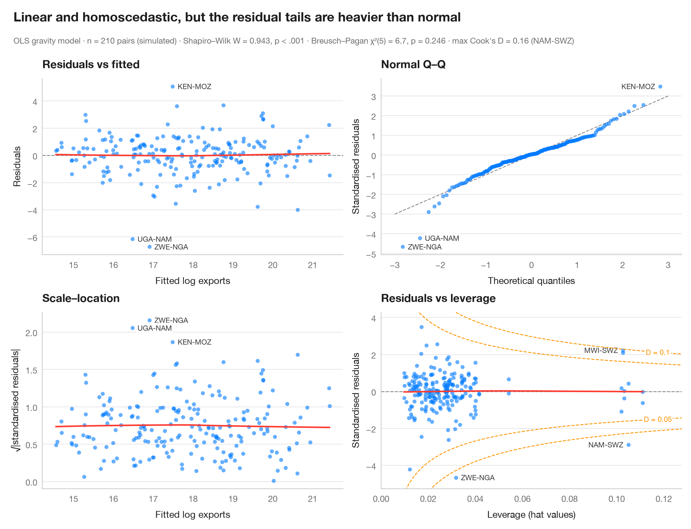

Residual diagnostics
The classic 2 × 2 panel for a linear model — linearity, normality, variance, leverage.

Four views of the residuals answer four questions. Residuals vs fitted: is the relationship linear (flat LOWESS curve)? Normal Q–Q: are residuals roughly normal (points on the line)? Scale–location: is the spread constant (flat curve)? Residuals vs leverage: does any observation pull the fit, i.e. sits beyond the dashed Cook's distance contours? The three most extreme observations are labelled in each panel, and formal tests sit in the subtitle.
The setting is Tengia, Wandschneider, Warin & Wunnava (2011, African Finance
Journal): an augmented gravity model of Southern African trade. The data are
simulated for illustration — they are not the paper's data or results:
n = 210 directed pairs among 15 African economies, 10 of them SADC members. Log
exports are regressed on the log GDPs of exporter and importer, log distance, a
common border and joint SADC membership; the errors are drawn with heavy tails,
which the Q–Q panel picks up. Everything comes from get_influence() in
statsmodels, plus lowess() for the smoothers, het_breuschpagan() and
scipy.stats.shapiro().
import matplotlib.pyplot as plt
import numpy as np
import pandas as pd
import statsmodels.formula.api as smf
from scipy import stats
from statsmodels.nonparametric.smoothers_lowess import lowess
from statsmodels.stats.diagnostic import het_breuschpagan
# Simulated data, set in the context of Tengia, Wandschneider, Warin & Wunnava (2011) [tengia2011]
# Data: 15 African economies (10 SADC members), all 210 directed trade pairs
rng = np.random.default_rng(2011)
codes = ["AGO", "BWA", "LSO", "MWI", "MOZ", "NAM", "ZAF", "SWZ", "ZMB", "ZWE", # SADC
"KEN", "UGA", "ETH", "NGA", "GHA"] # non-SADC
gdp = rng.normal(23, 1.3, 15) # log GDP (US$)
xy = np.r_[rng.normal([0, -2000], 700, (10, 2)), rng.normal([0, 1500], 1500, (5, 2))] # km
o, d = np.nonzero(~np.eye(15, dtype=bool)) # exporter, importer
dist = np.hypot(*(xy[o] - xy[d]).T) + 200
df = pd.DataFrame({"ln_gdp_o": gdp[o], "ln_gdp_d": gdp[d], "ln_dist": np.log(dist),
"sadc": ((o < 10) & (d < 10)).astype(int), "border": (dist < 800).astype(int)},
index=[f"{codes[a]}-{codes[b]}" for a, b in zip(o, d)])
df["ln_trade"] = (-12 + 0.9 * df.ln_gdp_o + 0.8 * df.ln_gdp_d - 1.2 * df.ln_dist
+ 0.7 * df.sadc + 0.5 * df.border + rng.standard_t(4, len(df)))
model = smf.ols("ln_trade ~ ln_gdp_o + ln_gdp_d + ln_dist + border + sadc", data=df).fit()
infl = model.get_influence()
fitted, resid = model.fittedvalues, model.resid
std_r, lev, cook = infl.resid_studentized_internal, infl.hat_matrix_diag, infl.cooks_distance[0]
p = model.df_model + 1
top = np.argsort(-np.abs(std_r))[:3] # 3 largest standardised residuals
fig, axes = plt.subplots(2, 2, figsize=(11, 8.4), layout="constrained")
fig.get_layout_engine().set(rect=(0, 0, 1, 0.905)) # keep the top of the figure for the title and subtitle
kw = dict(s=22, color="#007AFF", alpha=0.6, lw=0, zorder=2)
smooth = dict(color="#FF3B30", lw=1.8)
def label(ax, x, y, idx):
lo, hi = ax.get_xlim()
for i in idx: # text on the side with more room
right = (x[i] - lo) / (hi - lo) < 0.75
ax.annotate(df.index[i], (x[i], y[i]), xytext=(6 if right else -6, 0),
textcoords="offset points", ha="left" if right else "right",
va="center", fontsize=8.5, color="#3A3A3C", zorder=1,
bbox=dict(boxstyle="round,pad=0.15", fc="white", ec="none", alpha=0.85))
# 1. Residuals vs fitted
ax = axes[0, 0]
ax.axhline(0, color="#8E8E93", lw=1, ls="--")
ax.scatter(fitted, resid, **kw)
ax.plot(*lowess(resid, fitted, frac=1, it=0).T, **smooth)
label(ax, fitted.values, resid.values, top)
ax.set(title="Residuals vs fitted", xlabel="Fitted log exports", ylabel="Residuals")
# 2. Normal Q-Q of standardised residuals
ax = axes[0, 1]
order = np.argsort(std_r)
theo = stats.norm.ppf((np.arange(1, len(std_r) + 1) - 0.5) / len(std_r))
ax.plot([-3, 3], [-3, 3], color="#8E8E93", lw=1, ls="--")
ax.scatter(theo, std_r[order], **kw)
rank = {i: k for k, i in enumerate(order)}
label(ax, {i: theo[rank[i]] for i in top}, std_r, top)
ax.set(title="Normal Q–Q", xlabel="Theoretical quantiles", ylabel="Standardised residuals")
# 3. Scale-location
ax = axes[1, 0]
root = np.sqrt(np.abs(std_r))
ax.scatter(fitted, root, **kw)
ax.plot(*lowess(root, fitted, frac=1, it=0).T, **smooth)
label(ax, fitted.values, np.abs(root), top)
ax.set(title="Scale–location", xlabel="Fitted log exports", ylabel="√|standardised residuals|")
# 4. Residuals vs leverage with Cook's distance contours
ax = axes[1, 1]
ax.axhline(0, color="#8E8E93", lw=1, ls="--")
ax.scatter(lev, std_r, **kw)
ax.plot(*lowess(std_r, lev, frac=1, it=0).T, **smooth)
ylim = (std_r.min() - 0.6, std_r.max() + 0.8)
xmax = lev.max() * 1.15
h = np.linspace(0.002, xmax, 300)
for D in (0.05, 0.1):
r = np.sqrt(D * p * (1 - h) / h)
ax.plot(h, r, color="#FF9500", lw=1, ls="--"); ax.plot(h, -r, color="#FF9500", lw=1, ls="--")
sign = 1 if D == 0.1 else -1 # label D = 0.1 above, D = 0.05 below
hl = 0.92 * xmax
ax.text(hl, sign * np.sqrt(D * p * (1 - hl) / hl), f"D = {D}", color="#FF9500", fontsize=8.5,
ha="center", va="center", bbox=dict(boxstyle="round,pad=0.15", fc="white", ec="none"))
ax.set_ylim(*ylim); ax.set_xlim(0, xmax)
label(ax, lev, std_r, np.argsort(-cook)[:3])
ax.set(title="Residuals vs leverage", xlabel="Leverage (hat values)", ylabel="Standardised residuals")
for a in axes.flat:
a.title.set_fontsize(12)
bp = het_breuschpagan(resid, model.model.exog)
sw = stats.shapiro(resid)
fmt_p = lambda q: "p < .001" if q < .001 else f"p = {q:.3f}"
fig.text(0.01, 0.964, "Linear and homoscedastic, but the residual tails are heavier than normal",
fontsize=15, fontweight="semibold", va="bottom")
fig.text(0.01, 0.923, f"OLS gravity model · n = {int(model.nobs)} pairs (simulated) · Shapiro–Wilk "
f"W = {sw.statistic:.3f}, {fmt_p(sw.pvalue)} · Breusch–Pagan χ²({p - 1:.0f}) = "
f"{bp[0]:.1f}, {fmt_p(bp[1])} · max Cook's D = {cook.max():.2f} ({df.index[cook.argmax()]})",
fontsize=9.5, color="#6E6E73", va="bottom")
plt.show()
Figures use the optional PyStatlas style: add plt.style.use("pystatlas.mplstyle") to match the look exactly.
Data source
- Simulated data. Simulated data with a fixed random seed, created for this example.
No real respondents, documents or measurements: the numbers only illustrate how the chart and its statistics work. - Tengia, Wandschneider, Warin & Wunnava (2011), Southern African trade integration. Tengia, O., Wandschneider, K., Warin, T., & Wunnava, P. (2011). Southern African economic integration: Evidence from an augmented gravity model. African Finance Journal, 13(1).
The example is set in the context of this paper; unless its description says otherwise, the numbers are simulated and are not the paper's data or results.
The examples illustrate statistical methods. Their numbers are simulated unless an entry says otherwise, and their titles describe what each figure shows in these simulated data — not findings of the cited papers, nor the author's position on the substantive question. For results, context and data, rely on the papers cited here.
How to cite
PyStatlas is created and maintained by Thierry Warin. If it helped your work, please cite it.
Warin, T. (2026). Residual diagnostics. In PyStatlas: A Python Gallery of Statistical Graphics for the Social Sciences (Version 1.1.0) [Computer software]. https://warint.github.io/pystatlas/model-diagnostics/residual-diagnostics/
@misc{warin2026statlas,
author = {Warin, Thierry},
title = {PyStatlas: A Python Gallery of Statistical Graphics for the Social Sciences},
year = {2026},
version = {1.1.0},
howpublished = {\url{https://warint.github.io/pystatlas/}},
note = {Source code: https://github.com/warint/pystatlas}
}More in Model diagnostics

Influence plot
Studentized residuals vs leverage, with bubbles sized by Cook's distance.
car::influencePlot()
ROC curves
Three classifiers compared by ROC curve, AUC with bootstrap 95% CI and Youden point.
pROC::ggroc() / pROC::ci.auc()
Calibration plot
Predicted vs observed risk per decile, with Wilson CIs, prediction histograms and Brier score.
rms::calibrate() / probably::cal_plot_breaks()